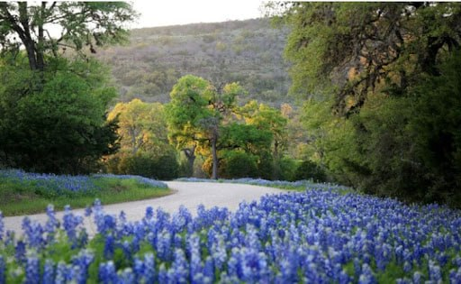
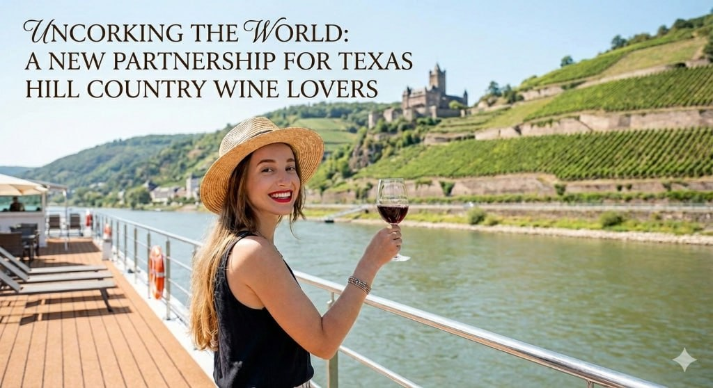

Expert Insights
Curated perspectives on travel, wine, and the art of the perfect escape.
Blog Posts

February 2026
Beyond the Blooms: Unlocking the Secret Beauty of the Texas Hill Country Wildflower Drive
The Hill Country Insider's exclusive Bluebonnet Back Roads route from DFW through Glen Rose, Hico, Llano, and the Willow City Loop to Fredericksburg.
Read More →
January 2026
Uncorking the World: A New Partnership for Texas Hill Country Wine Lovers
Diane Mack and Karen Musgrave launch the Sip & Sail Social Club Signature Travel Series, bridging Texas vines with the world's legendary wine regions.
Read More →Inspired to Travel?
Let us turn that travel inspiration into a real itinerary. Reach out and let us start planning.
Get Your Free Quote